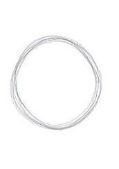

1
1 2
2 3
3
4Square and rectangular shapes
These shapes are known as quadrilateral shapes. These are shapes with four sides and are used to represent objects such as buildings, doors, or boxes. A square has four sides, all of which are the same size. A rectangle has four sides, where the two longer sides are equal in length and the two shorter sides are also equal in size.
Steps in drawing a square and a rectangle
The following are important steps to consider in drawing a square and a rectangle:
- Draw a bottom line as the base of the square or rectangle;
- Draw two parallel vertical lines up from the two ends of the bottom line;
- Draw a top line parallel to the bottom line to connect the two side segments;
- Make sure each side of the square is of the same length; and
- For a rectangle, draw two parallel vertical lines, which will be the long sides; and then draw two parallel horizontal lines to connect the two sides of the vertical lines, which will be the short sides. Figure 2 shows examples of the square and rectangle.